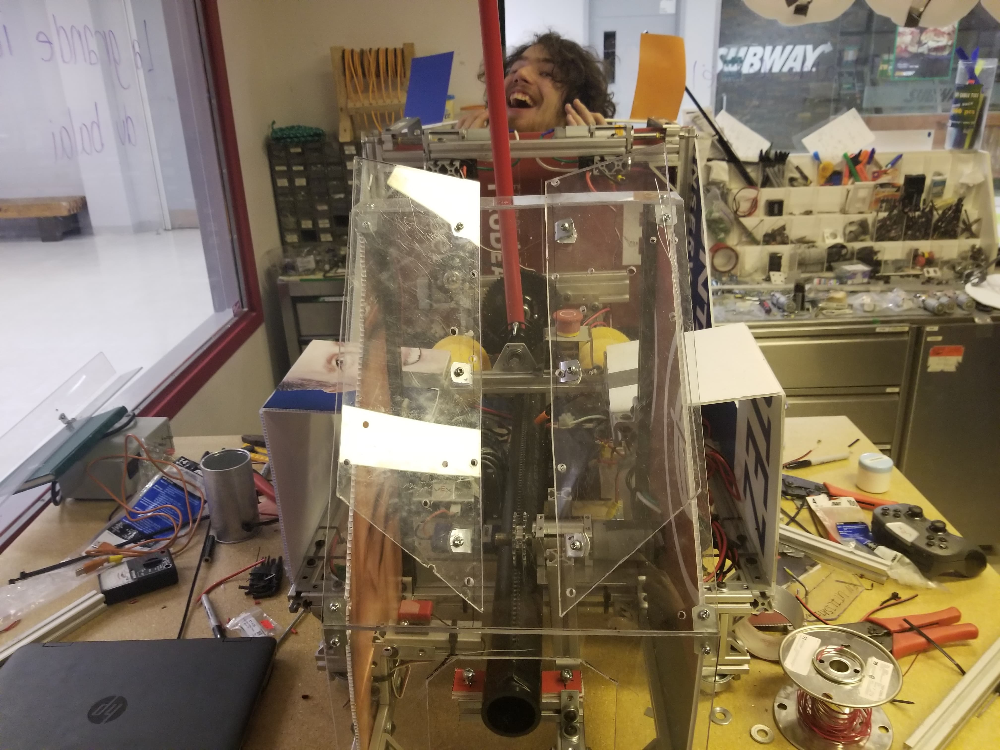

Momo Inside Out
Home page
The game
Logbook
The robot
Members
Memories
Puzzle
Week 1
Analysis of the challenge and the obstacles
Finding objectives
Start of ideas
BrainStorm
Analysis of ideas
Designing of plans for the team
Disassembly of the old robot
Recovering of old pieces
Week 2 to 4
Start of prototypes
Sketch drawings
Basic electronics
Beginning of construction of the mushroom press tube.
Design of the funnel for the ball
Design of the mechanism to immobilize the tornado
Construction of a pilotable base
Installation of previous years wheels
Fixing the panel containing electronics
Installing functional prototypes

Week 5
Continuation of prototypes
Construction of the prototype of the broom that will attain the arch
installation
Installation of the last prototype and test
Installation of motor controller
Installation of electronics
Construction of the mechanism to immobilize the tornado
Week 6
Test
Pilotable base test drive
Testing different mechanisms in motion
Construction
Addition of lexan to protect the robot during contact with the tornado or other robot
Week 7 to 9
Test
Continuation of the various tests
Prototype
To fix potential problems caused by the hairs of the broom that are too soft, prototypes have been created
Week 10 to the competition
Test
Test of different broom head
Test drive
Installation
Installation of the final broom head
Installation of mecanum wheel